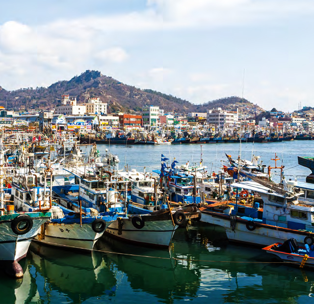
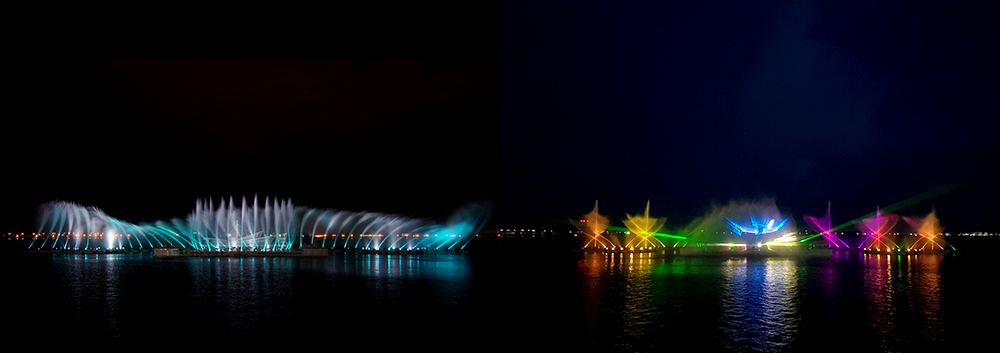
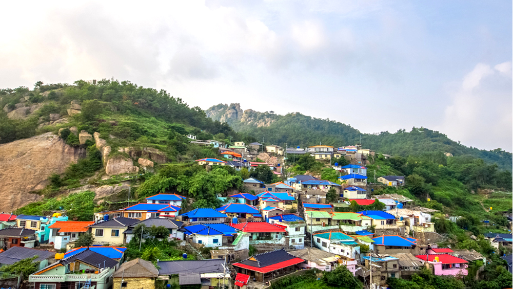

와 제 롤모델이 잡스에요!!! 아이폰 첫 출시되고 나서부터 계속 아이폰 쓰고 있는데 잡스가 너무 그리워요ㅠㅠ 지금은 돈만 벌려고 하는 것 같아서 디자인 발전도 없고ㅠㅠ와 제 롤모델이 잡스에요!!! 아이폰 첫 출시되고 나서부터 계속 아이폰 쓰고 있는데 잡스가 너무 그리워요ㅠㅠ 지금은 돈만 벌려고 하는 것 같아서 디자인 발전도 없고ㅠㅠ와 제 롤모델이 잡스에요!!! 아이폰 첫 출시되고 나서부터 계속 아이폰 쓰고 있는데 잡스가 너무 그리워요ㅠㅠ 지금은 돈만 벌려고 하는 것 같아서 디자인 발전도 없고ㅠㅠ와 제 롤모델이 잡스에요!!! 아이폰 첫 출시되고 나서부터 계속 아이폰 쓰고 있는데 잡스가 너무 그리워요ㅠㅠ 지금은 돈만 벌려고 하는 것 같아서 디자인 발전도 없고ㅠㅠ와 제 롤모델이 잡스에요!!! 아이폰 첫 출시되고 나서부터 계속 아이폰 쓰고 있는데 잡스가 너무 그리워요ㅠㅠ 지금은 돈만 벌려고 하는 것 같아서 디자인 발전도 없고ㅠㅠ
여행에 빠지다

10월에 떠나기 좋은 국내 여행지 추천
물과 빛이 살아 뛰는 항구도시 전남 목포
목포의 새벽은 어판장에서부터 시작된다. 날마다 이맘때면 먼 바다로 나갔던 배들은 싱싱한 생선과 어부들의 지친 몸, 습기를 머금은 여명을 싣고 항구로 돌아온다. 살아 뛰는 목포의 맥박은 파시와 어판장에서 일찌감치 절정을 이룬다.
글
우현석 (서울경제신문 객원기자 겸 여행 작가)
사진
목포 시청 제공
-
펄펄 뛰는 생선과 바다의 내음을 맡기 위해 숙소를 빠져나와 어판장(목포종합수산시장)에 도착한 시간은 오전 4시 30분. 먼동이 트려면 아직 멀었지만, 어판장의 전등은 이미 불야성이다. 어판장에는 하루 300명이 넘는 중도매인들이 몰려든다. 선창에 몸을 기댄 어선들은 쉼 없이 생선 상자를 쏟아낸다. 어판장 바닥은 생선으로 뒤덮여있고 상인들은 물고기의 크기와 선도를 가늠하려는 듯 이곳저곳을 둘러보고 다닌다.
-
잠시 후 한쪽 끝에서부터 경매가 시작되자 경매사들이 알아들을 수 없는 소리로 가격을 부르고 상인들도 춤추는 것 같은 손놀림으로 가격 신호를 보낸다. 그들만의 언어로 경매가 끝나자 상인들은 궤짝을 옮기기 시작한다. 상인에게 목포에서 유통되는 생선의 양에 관해 묻자 “목포 어판장의 1년 거래 위탁액은 1,500억 원 정도 된다”며 “하루 평균 4억~5억 원 정도 거래되는 셈”이라고 말한다.
안강망 어선의 경우 밀물, 썰물 때에 맞춰 하루 두 번 들어오는데 갈치·병어·조기 등 여러 종을 함께 잡아 배에서 분류작업을 해서 가져온다. 잡은 물고기를 그물째 가져와 항구에서 거두고 분류하는 유자망 어선과 다른 방식인 셈이다. (목포시 해안로 265-4)
-

고하도
목포시 쪽 해안에서 바라본 고하도. 목포대교 너머로 저녁해가 넘어가고 있다.
목포 관광에서 빼놓을 수 없는 곳이 고하도이다. 이순신 장군이 명량에서 왜의 수군을 격파하고 군영을 옮겨 주둔하던 곳이기 때문이다. 이순신 장군은 1597년 10월 29일 이후 100여 일 동안 이 섬에 주둔하며 수군을 추슬러 재기의 발판을 마련했다. 고하도는 수군의 재건뿐 아니라, 백성들의 생활 편익 증진에도 의미 있는 장소다. 우리나라의 목화는 문익점이 중국에서 들여왔지만, 요즘 사용되는 미국산 목화는 일본인이 목포에 들여와 재배했는데 그 발상지가 바로 고하도이기 때문이다.
고하도 원마을의 동구태와 모충각 사이에는 ‘조선 육지면발상비’가 있는데 이것이 바로 1904년 일본인 영사가 미국산 목화를 고하도에서 처음 재배한 것을 기념해 세운 비석이다. 고하도의 북쪽 해안 사면에 서서 바라보면 목포 시내가 한눈에 들어오는데, 유달산을 정면에서 마주 볼 수 있는 것이 특징이다. 섬의 북쪽 사면에는 태평양 전쟁 말기 자살 공격을 위해 만든 고속정을 숨겨 놓던 동굴들이 뚫려있어 또 다른 볼거리를 제공하고 있다.
-
유달산
고하도의 북쪽 해안 사면에 서서 바라보면 목포 시내가 한 눈에 들어오는데, 특히 유달산을 정면에서 마주 볼 수 있다.
목포에서 해가 지면 꼭 가봐야 할 곳이 춤추는 바다 분수이다. 화·수·목·일요일은 오후 8시와 8시 30분 2회 공연하며, 금요일과 토요일에는 오후 8시, 8시 30분, 9시 3차례 공연이 이어진다. 춤추는 바다분수는 세계 최초의 대형 부유식 바다 분수로 폭 150m, 높이 13.5m의 설비에서 25층 건물 높이인 70m까지 물을 분사하는데, 물보라 위에 292개의 LED 조명, 63개의 경관조명으로 아름다운 경관을 연출한다. 홈페이지에 들어가 사연을 접수하면 연인 간에 프러포즈 등 소중한 추억을 만들어 갈 수도 있다. (목포시 미항로 115)
춤추는 바다분수
목포에서 해가 지면 꼭 가봐야 할 곳이 춤추는 바다분수. 세계 최대 초대형 부유식 바다음악분수로서 음악과 분수의 다이나믹한 연출, 워터스크린의 영상 공연 및 레이져쇼가 펼쳐진다.
목포에서는 산업화의 뒤안길에서 잊혀 가는 달동네를 찾아보는 것도 색다른 맛이다. 어느 도시든 이런 달동네는 한두 군데 있기 마련인데 목포에서는 다순구미가 바로 그런 곳이다. 다순구미의 행정구역명은 온금동(溫錦洞)으로 ‘공짜인 햇볕만 마음대로 누릴 수 있는 동네’라는 뜻을 갖고 있다. 이곳에는 주로 가난한 뱃사람들이 살았는데, 조수(潮水)가 가장 낮을 때면 너나없이 육지로 들어와 아내와 회포를 푼 까닭에 이 동네 아이들은 동갑에 생일까지 같은 아이들이 많았다. 이렇게 태어난 아이들이 또 자라서 아버지를 따라 뱃사람이 되고, 결혼하고, 뱃일을 나갔다가 풍랑을 만나 죽는 운명의 대물림이 이어지던 마을이 바로 이곳이다.
-

다순구미 마을
바다를 굽어보는 동네, 목포 유달산 아래 좁은 골목길과 가파른 계단이 있는 마을. 어느 도시든 달동네는 한 두 군데 있게 마련인데 목포에서는 다순구미가 바로 그런 곳이다.
또 목포에 왔다면 김대중노벨평화상기념관도 둘러볼 만하다. 우리나라에서 최초로 노벨상을 받은 인물의 발자취를 찾아보는 것도 의미가 있기 때문이다. 기념관을 목포 삼학도에 건립하게 된 것은 김대중 대통령이 유년 시절부터 정계에 입문하기까지 활동한 곳이 목포인 데다 그의 철학과 신념이 목포에서 활동하며 굳어졌기 때문이다. 이곳에는 2000년 노르웨이 오슬로에서 개최된 노벨 평화상 시상 모습과 수상 사유, 민주화를 위해 노력한 그의 업적 등이 소개돼 있다. (목포시 삼학로92번길 68)
TIP찾아 가는 길
-
 고속철(SR) 수서역 → 목포역 → 도보(700m)
고속철(SR) 수서역 → 목포역 → 도보(700m) -
 승용차 경부고속도로 → 서천공주고속도로 → 서해안고속도로 → 고하대로 → 연산로 → 산정로
승용차 경부고속도로 → 서천공주고속도로 → 서해안고속도로 → 고하대로 → 연산로 → 산정로
-
최고예요
322
-
좋아요
322
-
슬퍼요
322
-
그저 그래요
322
-
화나요
322